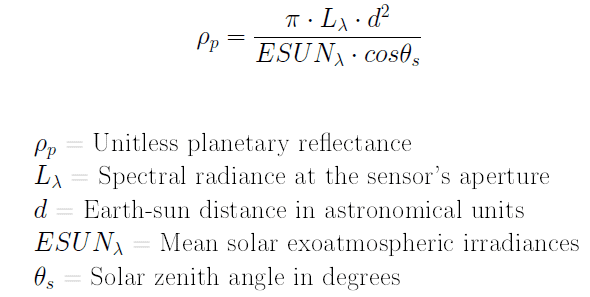

MSS images with scaled digital number units are converted to units of top-of-atmosphere (TOA) reflectance by first converting to TOA radiance (Equation 1).
Lλ = "gain" * QCAL + "bias"
Equation 1. Conversion from DN to TOA radiance using "gain" and "bias" parameters from the LPGS metadata file, according to USGS recommendation for conversion from DN to TOA radiance.
Then the TOA radiance image is converted to TOA reflectance using Equation 2.
Equation 2. Conversion from TOA radiance to TOA reflectance.